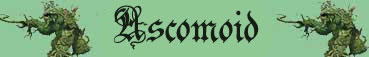
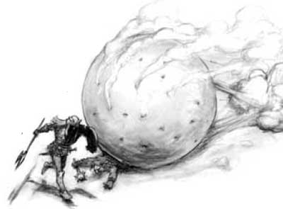

Nube di Spore;
Resistenza Superiore alla Botta;
Corpo Non Direzionale;

|
|
Ambiente/Habitat | Caverne, Sotterranei |
| Frequenza | Non Comune | |
| Organizzazione | Solitario o Piccolo Gruppo | |
| Periodo di Attività | Qualsiasi | |
| Dieta | Carnivora | |
| Intelligenza | Non Intelligent (0) | |
| Punti Combattimento | Nessuno | |
| Tesoro | Occasionale | |
| Allineamento Dominante | Neutrale | |
| Numero di Apparizione | 1 | |
| Classe Armatura | 3 [10 base, 6 corazza, 1 destrezza] | |
| Movimento | 8 esagoni | |
| Dadi Vita | 7 (+10 punti ferita) | |
| Thac0 | Thac0 14 | |
| Numero di Attacchi | Nessuno | |
| Danni | Nessuno | |
| Poteri Offensivi |
Travolgere
Rotolando; Nube di Spore; |
|
| Poteri Difensivi |
Robustezza
Superiore (+10 punti
ferita); Resistenza Superiore alla Botta; Corpo Non Direzionale; |
|
| Poteri Generici | Poteri dei Piantiformi; | |
| Vulnerabilità | Nessuna; | |
| Resistenza alla Magia | Nessuna | |
| Sensi | Senso del Temore (30 metri) | |
| Dimensioni | Large (2.50 m. di diametro) | |
| Morale | Fearless (20) | |
| Valore in Punti Esperienza | 1500 |
|
TIRI SALVEZZA DELLA CREATURA |
|||||||
| CORAGGIO | ENERGIA VITALE | MAGIA | MALATTIA | MENTE | RIFLESSI | ROBUSTEZZA | VELENO |
| 0 | +10%* | 0 | Immunità Piante | Immunità Piante | -5% | +10% | Immunità Piante |
| 42 | 37 | 57 | 41 | 55 | 54 | 34 | 38 |
Descrizione
Una grossa sfera irregolare di materia vegetale compatta dal diametro di circa 2 metri e mezzo e dal colorito giallastro. Sulla superficie della sfera compaiono numerosi orifizi cosparsi di muffa giallognola. Sbuffi di spore verdastre fuoriescono dagli orifizi spargendosi nell'aria circostante alla sfera. L'ascomoide pesa circa 250 chilogrammi.
Combat
L'ascomoide non ha alcun attacco diretto ma il suo modo di combattere consiste nel rotolare sugli avversari travolgendoli e schiacciandoli con il proprio massiccio peso. Una volta in mezzo ai nemici l'ascomoide lancia una nube di spore per rallentarli e nausearli per poi riprendere a travolgerli.
|
 |
TRAVOLGERE ROTOLANDO (Powerful Special Ability): La creatura può utilizzare quest'abilità speciale semplicemente spostandosi nelle caselle occupate dai propri avversari con un'azione di movimento o di mezzo movimento. La creatura non può in alcun caso terminare il proprio movimento in una casella occupata da un'altra creatura e necessita quindi per travolgerla di abbastanza movimento per uscire da quella posizione (anche se unicamente per tornare nella posizione precedentemente occupata). La creatura non può travolgere o passare su posizioni occupate da creature di dimensioni huge o superiori. Quando la creatura travolge una vittima l'ingresso nella posizione occupata le costerà un punto movimento supplementare. Le vittime che rischiano di essere travolte hanno diritto a superare un tiro salvezza su riflessi per evitare di restare schiacciate. Se il tiro salvezza fallisce la creatura sarà travolta cadendo a terra (knockdown) e perdendo ogni successiva azione (ivi compresi gli eventuali attacchi di opportunità), la creatura subirà, inoltre, 2d6+3 danni da schiacciamento (botta) dimezzabili superando un tiro salvezza su robustezza. NUBE DI SPORE (Superior Special Ability): In luogo di effettuare un normale attacco la creatura, impiegando un'azione complessa avente fattore iniziativa +3, è in grado di spargere una nube di spore venefiche. Le spore si cospargeranno in un'area sferica di 15 metri di diametro il cui centro è corrispondente alla posizione della creatura. Tutti coloro si trovano nell'area d'effetto saranno colpiti dal seguente veleno gassoso a contatto: Spore Inabilitanti : Onset 1 round, Effetti 0/ Incapacitato per 3 rounds, Delay none, Tiro Salvezza 0, Assuefazione nessuna. Una volta utilizzato questo attacco speciale la creatura non potrà riutilizzarlo nei successivi 3 round di combattimento. |
ROBUSTEZZA SUPERIORE (Typical Ability): Il fisico della creatura è estremamente robusto. Ciò conferisce alla stessa una robustezza superiore che gli garantisce 10 punti ferita supplementari.
RESISTENZA SUPERIORE ALLA BOTTA (Typical Ability): Il corpo della creatura è particolarmente resistente ai danni da botta, per tale motivo la stessa ridurrà del 50% (per eccesso) tutti i danni da botta provocati nei suoi confronti.
CORPO NON DIREZIONALE (Lesser Special Ability): La direzione di arrivo degli attacchi nei confronti della creatura è totalmente irrilevante. Il corpo della stessa, infatti, non ha una direzione frontale. La creatura combatte e si difende su tutti i lati intorno al suo corpo allo stesso modo. Tutti gli attacchi rivolti alla creatura, quindi, saranno considerati come attacchi frontali non subendo la stessa in alcun caso le penalità previste per gli attacchi alle spalle. Anche in caso di attacchi di opportunità, infatti, la creatura li riceverà senza che chi li effettua possa applicare i benefici previsti per gli attacchi alle spalle.
POTERI DEI PIANTIFORMI : In quanto creature piantiformi ottengono le seguenti caratteristiche degli esseri vegetali (link).
Habitat/Society
Gli ascomoidi sono funghi carnivori sotterranei che si nutrono dei cadaveri delle creature animali che schiacciano fino alla morte. In pratica, questa creatura si posiziona sui cadaveri delle sue vittime e ne assorbe i fluidi vitali con alcune radici che fuoriescono dai medesimi orifizi dai quali sono espulse le spore tossiche. Dopo 48 ore il processo di decomposizione è terminato e del cadavere non resta altro che un mucchio di ossa spaccate (ciò può incidere negativamente sulla possibilità di lanciare magie sullo stesso, ad esempio impedendo di risorgerlo). Avendo una grossa percentuale di liquidi nel loro organismo, queste creature, nonostante non subiscono penalità alla luce solare, preferiscono evitare di esporsi alla luce del giorno e vivere nelle ombre delle caverne. Non di rado nella zona abitata da queste creatura è possibile trovare scheletri ed ossa rotte delle loro vittime precedenti.
Ecology
Un fungo manca di clorofilla, un vero gambo, radici o foglie . Incapace di operare la fotosintesi, sopravvive come parassita, consumando lentamente la materia organica.
Mystical Resource Sourge (Ammassi di Spore) Quantità: 3, Presenza 33% - Effetto Particolare: Veleno - Qualità della Risorsa: Common.